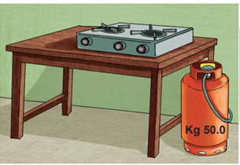
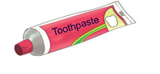
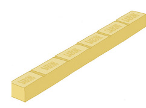
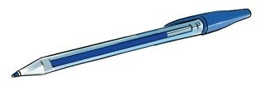
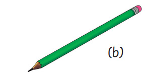

Table, gas cooker and gas cylinder

Toothpaste

Bar of soap
Figure 7: Items used at home
(ii) Various items used in schools, such as chalks, exercise books, pens and books. Figure 8 shows a pen and a pencil.

(a)

(b)
Figure 8: Pen and pencil